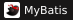
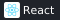
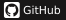

주로 사용하는 백엔드 및 데이터베이스 기술입니다.
| Category | Technologies |
|---|---|
| Backend |
 |
| Database |
프로젝트 개발 및 운영 과정에서 사용한 기술과 도구입니다.
| Category | Technologies |
|---|---|
| Frontend | |
| AI-assisted |
 |
| Version Control |
 |
| Collaboration | |
| Environment |
React와 Node.js는 원아이소프트 프로젝트에서 AI 도구의 도움을 받아 사용했습니다.